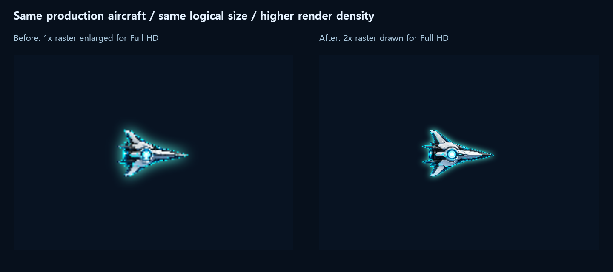
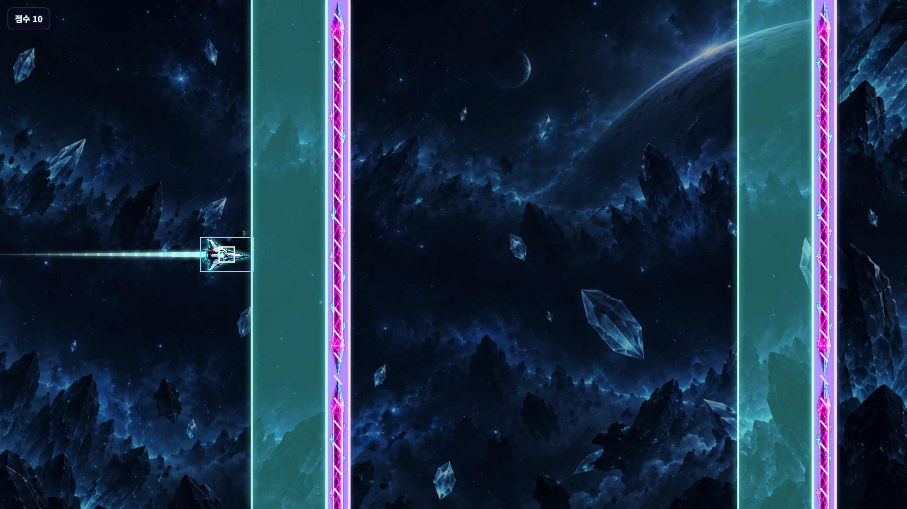
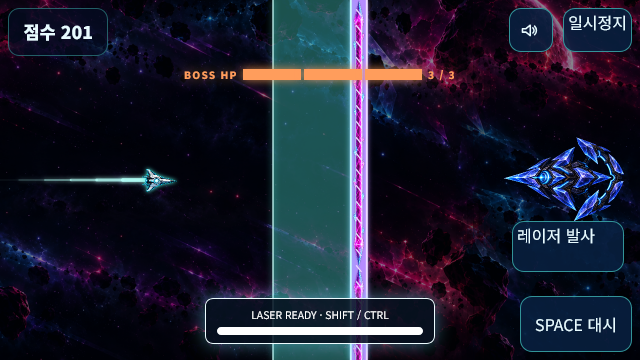
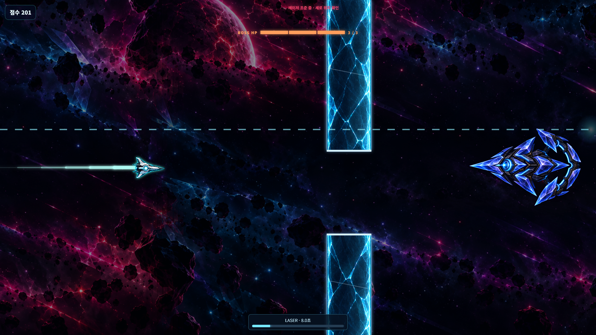

VOID SURFER · 실제 적용 화면
프로덕션 렌더러·HUD·스타일과 실제 엔진 상태를 사용했습니다. 캡처는 중력 0·충돌 무적 설정으로 재현했으며, 실기기 프레임 속도를 측정한 자료는 아닙니다.
기체 선명도 비교
같은 기체 원본과 실제 drawShip 함수를 사용한 확대 비교입니다. 왼쪽은 낮은 해상도에서 확대한 방식, 오른쪽은 더 많은 픽셀로 그린 방식입니다. 기체의 논리 크기는 같습니다.

실제 Full HD 플레이 화면
화면 1920×1080에 캔버스도 1920×1080으로 그립니다. 플레이 공간은 기존 960×540 논리 좌표 그대로입니다.
두 영역과 특수벽 성공 구간
작은 흰 정사각형은 실제 16×16 피격 영역, 큰 하늘색은 56×36 성공 영역입니다. 진단 캡처에서만 두 영역을 표시했습니다. 큰 영역이 띠에 닿으면 중심이 아직 밖이어도 Space를 허용합니다.

AEGIS · 동일한 HP 3칸을 한 번에 제거
가로 모바일 · DPR2
640×360 표시 영역에 1280×720 버퍼를 사용합니다. 발사 버튼과 충전 게이지가 화면 안에 들어옵니다.

화면 안쪽의 줄 레이저
피해 영역은 위·아래 10%를 침범하지 않으며 벽 구멍 보호 조건도 유지합니다.

4K 렌더링 상한 확인
3840×2160, DPR2에서도 버퍼를 3840×2160으로 제한하여 8K 버퍼 생성을 막았습니다.
4K 원본 화면 보기